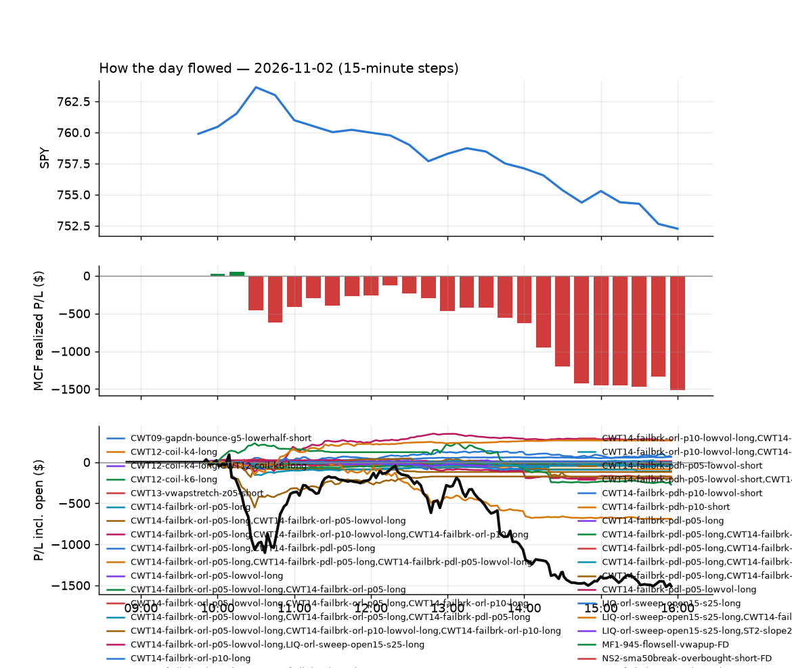
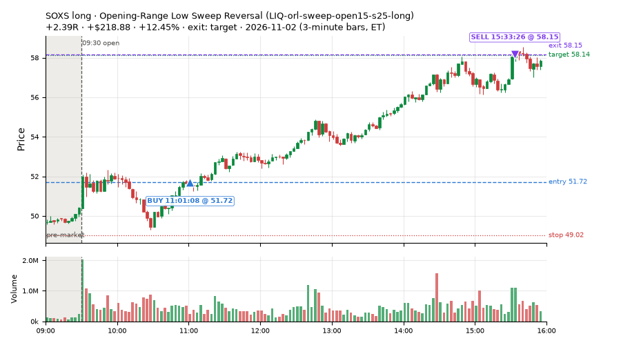
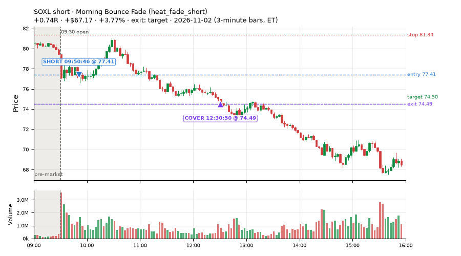
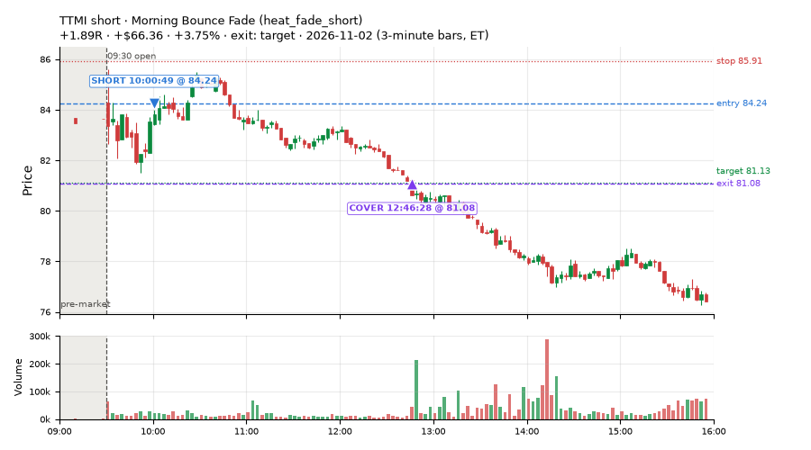
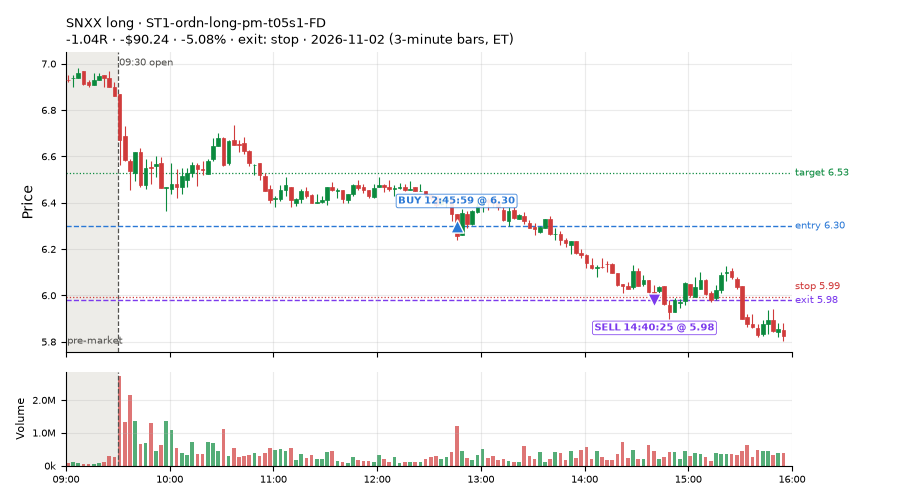
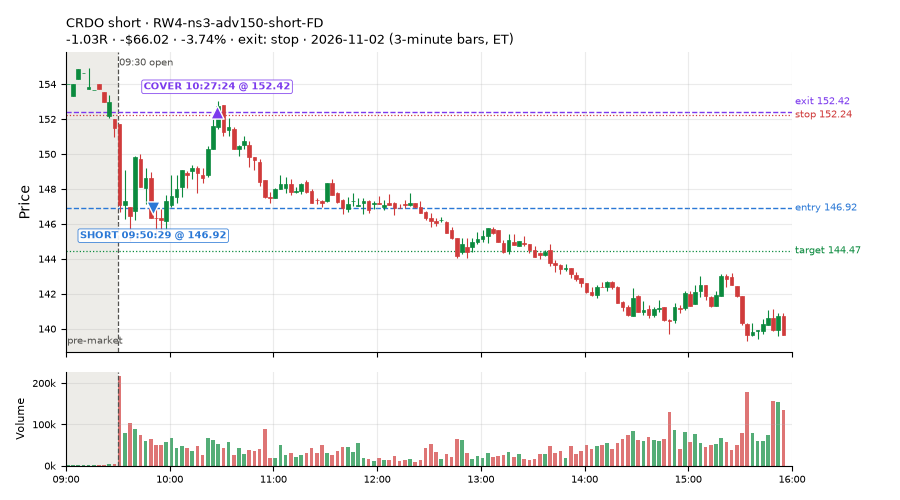
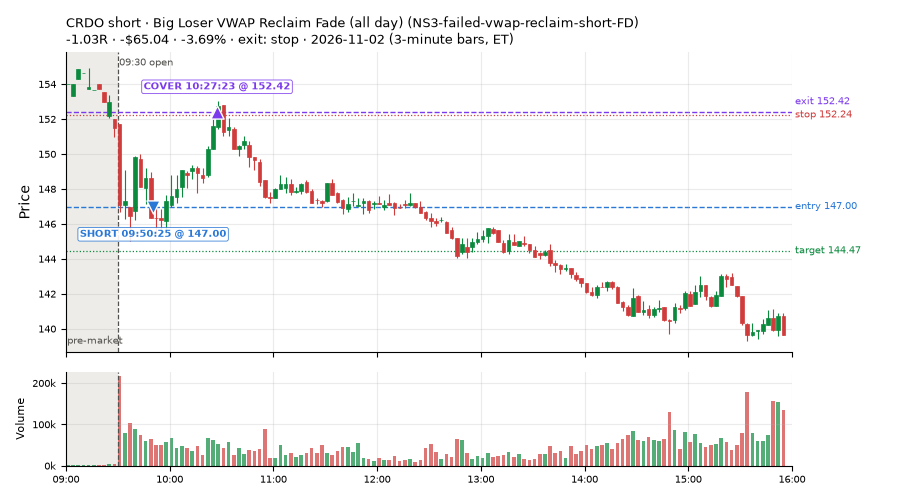
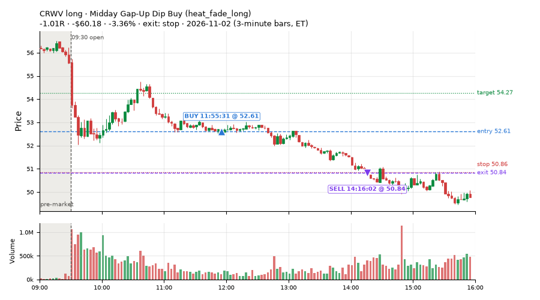
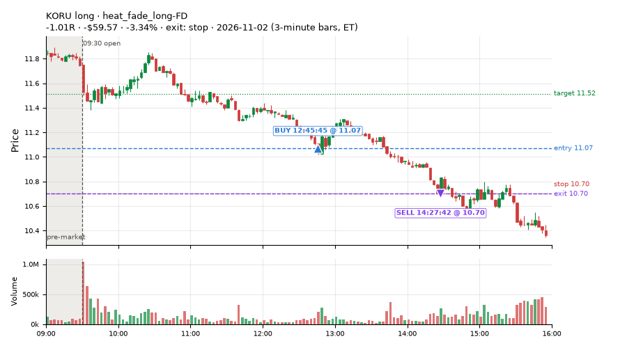

395 trades · win rate 49% · P/L $-1,509.80
PROBATION: no live setup has passed both locked test periods. 10 owner-directed setups added 2026-10-08 (MarcoFlow top 5 + 5 new), untested live. RW6G1 (RW6 + VWAP band guard) added 2026-10-09, probation.

| Symbol | Setup | Side | In | Out | Entry | Exit | Exit reason | % gained | P/L |
|---|---|---|---|---|---|---|---|---|---|
| SOXS | Opening-Range Low Sweep Reversal (LIQ-orl-sweep-open15-s25-long) | long | 11:01 | 15:33 | 51.72 | 58.15 | target | +12.45% | $218.88 |
| SOXL | Morning Bounce Fade (heat_fade_short) | short | 09:50 | 12:30 | 77.41 | 74.49 | target | +3.77% | $67.17 |
| TTMI | Morning Bounce Fade (heat_fade_short) | short | 10:00 | 12:46 | 84.24 | 81.08 | target | +3.75% | $66.36 |
| Symbol | Setup | Side | In | Out | Entry | Exit | Exit reason | % lost | P/L |
|---|---|---|---|---|---|---|---|---|---|
| SNXX | ST1-ordn-long-pm-t05s1-FD | long | 12:45 | 14:40 | 6.30 | 5.98 | stop | -5.08% | $-90.24 |
| CRDO | RW4-ns3-adv150-short-FD | short | 09:50 | 10:27 | 146.92 | 152.42 | stop | -3.74% | $-66.02 |
| CRDO | NS3-failed-vwap-reclaim-short-FD | short | 09:50 | 10:27 | 147.00 | 152.42 | stop | -3.69% | $-65.04 |
| CRWV | heat_fade_long | long | 11:55 | 14:16 | 52.61 | 50.84 | stop | -3.36% | $-60.18 |
| KORU | heat_fade_long-FD | long | 12:45 | 14:27 | 11.07 | 10.70 | stop | -3.34% | $-59.57 |








Signal to fill: median 2s, 90th percentile 4s (395 trades). Bars close each minute; the order follows the bar close.
Best excursion (MFE): median 0.41R; worst (MAE) median 0.93R. 32% of trades never got +0.25R in our favour; 3 reached +1R and still closed at or below 0.
| Symbol | Setup | Best R | Worst R | Closed R |
|---|---|---|---|---|
| WDC | heat_fade_long-FD | +1.69 | -1.45 | -1.02 |
| P | heat_fade_long-FD | +1.37 | -1.02 | -1.02 |
| XLK | heat_fade_long-FD | +1.15 | -1.05 | -1.00 |
| PHM | RW2-exhaustion-noon-adv150-short-FD | +0.98 | -1.05 | -1.04 |
| KWEB | CWT12-coil-k6-long | +0.98 | -0.98 | -0.98 |
| Entry time | Trades | Win | Avg R | P/L |
|---|---|---|---|---|
| 09:50-10:30 | 198 | 52% | -0.17 | $-77.80 |
| 10:30-11:30 | 129 | 60% | +0.01 | $-89.51 |
| 11:30-13:00 | 49 | 22% | -0.65 | $-1,131.46 |
| 13:00-14:00 | 7 | 14% | -0.87 | $-148.57 |
| 14:00-16:00 | 12 | 25% | -0.35 | $-62.46 |
| Setup | Trades | Win | Avg R | Adj R (net of SPY) | P/L |
|---|---|---|---|---|---|
| Gap-Down Bounce Rejection Short (5% gap) (CWT09-gapdn-bounce-g5-lowerhalf-short) | 1.0 | 100% | +11.80 | +7.07 | $64.31 |
| Coil Under the High (4 bars) (CWT12-coil-k4-long) | 46.0 | 61% | -0.15 | +0.26 | $-84.19 |
| Coil Under the High (6 bars) (CWT12-coil-k6-long) | 8.0 | 12% | -0.79 | +0.12 | $-38.61 |
| Stretched Above VWAP Fade (CWT13-vwapstretch-z05-short) | 8.0 | 50% | -0.20 | -0.95 | $-31.99 |
| Failed Opening-Range-Low Break Long (0.05 ATR) [fill] (CWT14-failbrk-orl-p05-long) | 31.0 | 58% | -0.14 | -0.06 | $-110.38 |
| Failed Opening-Range-Low Break Long (0.05 ATR, low volume) [fill] (CWT14-failbrk-orl-p05-lowvol-long) | 29.0 | 69% | +0.00 | +0.22 | $7.11 |
| Failed Opening-Range-Low Break Long (0.1 ATR) [fill] (CWT14-failbrk-orl-p10-long) | 23.0 | 70% | +0.04 | +0.11 | $-6.82 |
| Failed Opening-Range-Low Break Long (low volume) (CWT14-failbrk-orl-p10-lowvol-long) | 25.0 | 56% | -0.13 | +0.15 | $-21.33 |
| Failed Prior-Day-High Break Short (0.05 ATR, low volume) [fill] (CWT14-failbrk-pdh-p05-lowvol-short) | 15.0 | 27% | -0.64 | -0.43 | $-119.01 |
| Failed Prior-Day-High Break Short (low volume) (CWT14-failbrk-pdh-p10-lowvol-short) | 5.0 | 20% | -0.71 | -0.38 | $-38.79 |
| Failed Prior-Day-High Break Short (0.1 ATR) [fill] (CWT14-failbrk-pdh-p10-short) | 14.0 | 50% | -0.35 | -0.13 | $-47.26 |
| Failed Prior-Day-Low Break Long (shallow) (CWT14-failbrk-pdl-p05-long) | 18.0 | 61% | -0.13 | -0.08 | $-35.67 |
| Failed Prior-Day-Low Break Long (0.05 ATR, low volume) [fill] (CWT14-failbrk-pdl-p05-lowvol-long) | 13.0 | 62% | -0.07 | +0.10 | $-33.46 |
| Opening-Range Low Sweep Reversal (LIQ-orl-sweep-open15-s25-long) | 9.0 | 22% | -0.16 | +0.62 | $65.29 |
| MF1-945-flowsell-vwapup-FD | 5.0 | 0% | -1.07 | -0.25 | $-17.18 |
| NS2-sma50break-overbought-short-FD | 3.0 | 33% | -0.41 | -1.23 | $-21.42 |
| Big Loser VWAP Reclaim Fade (all day) (NS3-failed-vwap-reclaim-short-FD) | 4.0 | 50% | -0.10 | -0.10 | $-43.36 |
| RW2-exhaustion-noon-adv150-short-FD | 32.0 | 72% | +0.32 | -0.01 | $270.86 |
| RW4-ns3-adv150-short-FD | 5.0 | 60% | -0.06 | -0.39 | $-8.57 |
| RW6-ns2-up3-short-FD | 1.0 | 100% | +0.76 | +0.47 | $12.88 |
| ST1-ordn-long-pm-t05s1-FD | 4.0 | 0% | -0.87 | -0.73 | $-213.05 |
| ST2-slope20up-long-am-t05s1-FD | 10.0 | 40% | -0.41 | -0.29 | $-188.77 |
| Midday Gap-Up Dip Buy (heat_fade_long) failed Apr-Jun holdout: -0.138R/trade over 1043 trades | 20.0 | 5% | -0.92 | -0.75 | $-688.65 |
| heat_fade_long-FD | 22.0 | 23% | -0.53 | -0.44 | $-272.81 |
| Morning Bounce Fade (heat_fade_short) failed Apr-Jun holdout: -0.015R/trade over 1420 trades | 26.0 | 23% | -0.62 | -0.36 | $-174.15 |
| heat_fade_short-FD | 18.0 | 78% | +0.40 | +0.17 | $265.22 |
Market direction (SPY, beta 1) accounted for $-744.73 of today's $-1,509.80; the rest ($-765.07) came from the setups themselves. Avg R net of SPY: -0.06 (incl. a hedge leg's cost; report only).
28 setups live today. Today: 1163 signals, 395 taken, 97 lost because another setup held the symbol (8%). Since 2026-10-21 (9 sessions): 7324 signals, 2942 taken, 409 lost to other setups (6%). Peak open positions today 147 of 200 slots. Earnings blackout removed 1857 symbols before scanning.
Simulated playing time (not live): 4363 what-if trades of signals not taken, avg -0.08R, 55% winners; of them 409 lost to another setup (avg -0.18R).
Crowded out: NS2-sma50break-overbought-short, heat_fade_long-FD · Starved: MF1-945-flowsell-vwapup-FD, heat_fade_long, heat_fade_short-FD
| Prio | Setup | Today sig / taken | Sessions | Signals / taken / trades | Taken/day | Expected/day | Lost to other setups | Lost to (setup n) | Top skip reasons | SIMULATED: not-taken n / avg R / win | Verdict |
|---|---|---|---|---|---|---|---|---|---|---|---|
| 1 | ST1-ordn-long-pm-t05s1-FD ST1-ordn-long-pm-t05s1-FD | 6 / 4 | 9 | 16 / 10 / 10 | 1.11 | 3.49 | 0 | – | spread / quote / size 5, broker rejected 1 | 6 / -0.32R / 33% | slow 5.6 entries/week; ~11 weeks to 60 trades |
| 2 | RW6-ns2-up3-short-FD RW6-ns2-up3-short-FD | 3 / 1 | 9 | 58 / 24 / 24 | 2.67 | 7.12 | 4 | LIQ-orl-sweep-open15-s25-long 2, CWT09-gapdn-bounce-g5-lowerhalf-short 1, RW6-ns2-up3-short-FD 1 | not shortable / shorts off 17, daily loss cap 9, symbol held by another setup 4 | 34 / +0.45R / 79% | slow 13.3 entries/week; ~4 weeks to 60 trades |
| 3 | NS2-sma50break-overbought-short-FD NS2-sma50break-overbought-short-FD | 6 / 3 | 9 | 100 / 51 / 51 | 5.67 | 17.08 | 5 | CWT12-coil-k4-long 4, LIQ-orl-sweep-open15-s25-long 1 | daily loss cap 19, not shortable / shorts off 14, spread / quote / size 11 | 49 / +0.32R / 67% | ok 28.3 entries/week |
| 4 | Big Gainer Average Reclaim Fade NS2-sma50break-overbought-short | 3 / 0 | 9 | 48 / 6 / 6 | 0.67 | 5.74 | 28 | NS2-sma50break-overbought-short-FD 25, RW6-ns2-up3-short-FD 7, CWT12-coil-k4-long 2 | symbol held by another setup 28, not shortable / shorts off 8, spread / quote / size 6 | 42 / +0.12R / 60% | crowded-out 28 of 48 signals (58%) lost to setups already holding the symbol |
| 5 | MF1-945-flowsell-vwapup-FD MF1-945-flowsell-vwapup-FD | 19 / 5 | 9 | 103 / 40 / 40 | 4.44 | 23.94 | 2 | CWT12-coil-k6-long 1, CWT14-failbrk-orl-p05-long 1 | spread / quote / size 26, daily loss cap 25, not shortable / shorts off 10 | 63 / -0.13R / 33% | starved 4.44 entries/day vs ~23.94 expected |
| 6 | ST2-slope20up-long-am-t05s1-FD ST2-slope20up-long-am-t05s1-FD | 16 / 10 | 9 | 113 / 85 / 85 | 9.44 | 24.03 | 11 | heat_fade_short-FD 9, heat_fade_short 1, CWT09-gapdn-bounce-g5-lowerhalf-short 1 | spread / quote / size 15, symbol held by another setup 11, daily loss cap 2 | 28 / +0.06R / 68% | ok 47.2 entries/week |
| 7 | Midday Gap-Up Dip Buy heat_fade_long | 41 / 20 | 9 | 76 / 44 / 44 | 4.89 | 30.36 | 12 | heat_fade_long-FD 7, heat_fade_short-FD 2, heat_fade_short 2 | daily loss cap 15, symbol held by another setup 12, spread / quote / size 5 | 32 / -0.45R / 28% | starved 4.89 entries/day vs ~30.36 expected |
| 8 | Opening-Range Low Sweep Reversal LIQ-orl-sweep-open15-s25-long | 14 / 9 | 9 | 144 / 103 / 103 | 11.44 | – | 10 | CWT14-failbrk-orl-p10-long 9, CWT14-failbrk-orl-p05-lowvol-long 9, CWT14-failbrk-orl-p10-lowvol-long 8 | spread / quote / size 17, symbol held by another setup 10, per-setup cap 6 | 41 / -0.10R / 49% | ok 57.2 entries/week |
| 9 | RW2-exhaustion-noon-adv150-short-FD RW2-exhaustion-noon-adv150-short-FD | 55 / 32 | 9 | 372 / 164 / 164 | 18.22 | 50.34 | 9 | CWT12-coil-k4-long 5, CWT14-failbrk-orl-p10-lowvol-long 1, CWT14-failbrk-orl-p10-long 1 | daily loss cap 106, not shortable / shorts off 55, spread / quote / size 34 | 208 / -0.14R / 45% | ok 91.1 entries/week |
| 10 | heat_fade_long-FD heat_fade_long-FD | 72 / 22 | 9 | 147 / 59 / 59 | 6.56 | 51.74 | 39 | heat_fade_long 34, heat_fade_short-FD 2, heat_fade_short 2 | symbol held by another setup 39, daily loss cap 25, spread / quote / size 24 | 88 / -0.19R / 42% | crowded-out 39 of 147 signals (27%) lost to setups already holding the symbol |
| 11 | Failed Opening-Range-Low Break Long (low volume) CWT14-failbrk-orl-p10-lowvol-long | 33 / 25 | 9 | 370 / 220 / 220 | 24.44 | – | 5 | CWT14-failbrk-pdh-p05-lowvol-short 3, CWT14-failbrk-orl-p05-long 2, CWT14-failbrk-pdh-p10-short 2 | daily loss cap 70, spread / quote / size 55, per-setup cap 17 | 148 / -0.04R / 66% | ok 122.2 entries/week |
| 12 | Failed Opening-Range-Low Break Long (0.1 ATR) [fill] CWT14-failbrk-orl-p10-long | 34 / 23 | 9 | 459 / 247 / 247 | 27.44 | – | 9 | CWT14-failbrk-orl-p05-lowvol-long 6, CWT14-failbrk-orl-p05-long 6, CWT14-failbrk-orl-p10-lowvol-long 5 | daily loss cap 99, spread / quote / size 66, per-setup cap 32 | 210 / -0.12R / 62% | ok 137.2 entries/week |
| 13 | Morning Bounce Fade heat_fade_short | 61 / 26 | 9 | 182 / 86 / 86 | 9.56 | 31.76 | 0 | – | spread / quote / size 51, daily loss cap 32, not shortable / shorts off 11 | 96 / +0.09R / 53% | ok 47.8 entries/week |
| 14 | Failed Opening-Range-Low Break Long (0.05 ATR, low volume) [fill] CWT14-failbrk-orl-p05-lowvol-long | 74 / 29 | 9 | 865 / 366 / 366 | 40.67 | – | 13 | CWT14-failbrk-orl-p10-lowvol-long 5, CWT14-failbrk-orl-p10-long 5, CWT14-failbrk-orl-p05-long 4 | daily loss cap 247, per-setup cap 137, spread / quote / size 94 | 496 / -0.10R / 64% | ok 203.3 entries/week |
| 15 | heat_fade_short-FD heat_fade_short-FD | 85 / 18 | 9 | 549 / 207 / 207 | 23.00 | 173.78 | 122 | heat_fade_short 87, LIQ-orl-sweep-open15-s25-long 11, CWT14-failbrk-orl-p05-long 8 | symbol held by another setup 122, daily loss cap 92, spread / quote / size 79 | 342 / -0.02R / 48% | starved 23.00 entries/day vs ~173.78 expected |
| 16 | Failed Opening-Range-Low Break Long (0.05 ATR) [fill] CWT14-failbrk-orl-p05-long | 122 / 31 | 9 | 1230 / 443 / 443 | 49.22 | – | 96 | CWT14-failbrk-orl-p10-lowvol-long 77, CWT14-failbrk-orl-p10-long 77, CWT14-failbrk-orl-p05-lowvol-long 75 | daily loss cap 337, per-setup cap 199, spread / quote / size 143 | 785 / -0.12R / 62% | ok 246.1 entries/week |
| 17 | Gap-Down Bounce Rejection Short (5% gap) CWT09-gapdn-bounce-g5-lowerhalf-short | 17 / 1 | 9 | 348 / 68 / 68 | 7.56 | – | 4 | CWT12-coil-k4-long 3, CWT12-coil-k6-long 1, CWT14-failbrk-orl-p05-long 1 | not shortable / shorts off 197, per-setup cap 32, spread / quote / size 26 | 279 / +0.25R / 56% | ok 37.8 entries/week |
| 18 | Failed Prior-Day-High Break Short (0.05 ATR, low volume) [fill] CWT14-failbrk-pdh-p05-lowvol-short | 79 / 15 | 8 | 462 / 148 / 148 | 18.50 | – | 5 | CWT14-failbrk-orl-p10-long 4, CWT14-failbrk-orl-p05-long 3, CWT14-failbrk-orl-p10-lowvol-long 2 | daily loss cap 194, spread / quote / size 84, not shortable / shorts off 29 | 314 / -0.04R / 64% | ok 92.5 entries/week |
| 19 | Failed Prior-Day-High Break Short (low volume) CWT14-failbrk-pdh-p10-lowvol-short | 26 / 5 | 8 | 183 / 86 / 86 | 10.75 | – | 2 | CWT14-failbrk-orl-p10-long 2, CWT14-failbrk-orl-p05-long 2 | spread / quote / size 50, daily loss cap 33, not shortable / shorts off 12 | 97 / -0.05R / 66% | ok 53.8 entries/week |
| 20 | Failed Prior-Day-High Break Short (0.1 ATR) [fill] CWT14-failbrk-pdh-p10-short | 43 / 14 | 7 | 304 / 138 / 138 | 19.71 | – | 6 | CWT14-failbrk-pdh-p05-lowvol-short 3, CWT14-failbrk-pdh-p10-lowvol-short 3, CWT14-failbrk-orl-p10-long 3 | spread / quote / size 67, daily loss cap 50, not shortable / shorts off 24 | 166 / -0.06R / 63% | ok 98.6 entries/week |
| 21 | Stretched Above VWAP Fade CWT13-vwapstretch-z05-short | 24 / 8 | 7 | 107 / 63 / 63 | 9.00 | – | 1 | LIQ-orl-sweep-open15-s25-long 1 | daily loss cap 17, not shortable / shorts off 13, spread / quote / size 13 | 44 / -0.12R / 41% | ok 45.0 entries/week |
| 22 | Gap-Down VWAP Loss Short (5% gap) CWT09-gapdn-vwaploss-g5-short | 20 / 0 | 6 | 348 / 36 / 36 | 6.00 | – | 2 | CWT14-failbrk-orl-p05-lowvol-long 1, CWT14-failbrk-orl-p05-long 1 | not shortable / shorts off 206, per-setup cap 54, spread / quote / size 30 | 306 / -0.29R / 33% | ok 30.0 entries/week |
| 23 | Coil Under the High (6 bars) CWT12-coil-k6-long | 60 / 8 | 5 | 210 / 61 / 61 | 12.20 | – | 8 | heat_fade_short 4, CWT14-failbrk-pdh-p10-short 3, CWT14-failbrk-pdh-p05-lowvol-short 2 | daily loss cap 88, spread / quote / size 45, symbol held by another setup 8 | 149 / -0.17R / 35% | ok 61.0 entries/week |
| 24 | Coil Under the High (4 bars) CWT12-coil-k4-long | 113 / 46 | 3 | 317 / 120 / 120 | 40.00 | – | 8 | RW2-exhaustion-noon-adv150-short-FD 3, CWT14-failbrk-pdh-p05-lowvol-short 1, heat_fade_short 1 | per-setup cap 155, spread / quote / size 29, symbol held by another setup 8 | 196 / -0.31R / 50% | ok 200.0 entries/week |
| 25 | Failed Prior-Day-Low Break Long (shallow) CWT14-failbrk-pdl-p05-long | 64 / 18 | 2 | 110 / 28 / 28 | 14.00 | – | 2 | CWT14-failbrk-orl-p10-lowvol-long 2, CWT14-failbrk-orl-p10-long 2, CWT14-failbrk-orl-p05-lowvol-long 2 | daily loss cap 59, spread / quote / size 18, broker rejected 3 | 81 / -0.29R / 48% | ok 70.0 entries/week |
| 26 | Failed Prior-Day-Low Break Long (0.05 ATR, low volume) [fill] CWT14-failbrk-pdl-p05-lowvol-long | 33 / 13 | 2 | 63 / 30 / 30 | 15.00 | – | 3 | CWT14-failbrk-orl-p05-lowvol-long 3, CWT14-failbrk-orl-p10-lowvol-long 2, CWT14-failbrk-orl-p10-long 2 | daily loss cap 14, spread / quote / size 14, symbol held by another setup 3 | 32 / -0.23R / 53% | ok 75.0 entries/week |
| 27 | Big Loser VWAP Reclaim Fade (all day) NS3-failed-vwap-reclaim-short-FD | 24 / 4 | 1 | 24 / 4 / 4 | 4.00 | 22.02 | 1 | ST2-slope20up-long-am-t05s1-FD 1 | not shortable / shorts off 11, daily loss cap 5, spread / quote / size 3 | 20 / +0.52R / 80% | watch 4.00 entries/day vs ~22.02 expected |
| 28 | RW4-ns3-adv150-short-FD RW4-ns3-adv150-short-FD | 16 / 5 | 1 | 16 / 5 / 5 | 5.00 | 17.34 | 2 | ST2-slope20up-long-am-t05s1-FD 1, NS3-failed-vwap-reclaim-short-FD 1, RW4-ns3-adv150-short-FD 1 | spread / quote / size 5, not shortable / shorts off 4, symbol held by another setup 2 | 11 / +0.24R / 64% | ok 25.0 entries/week |
Every trade is attached as a CSV you can open and edit in Excel or Google Sheets. Live page: https://misiti15.github.io/MCF/live/